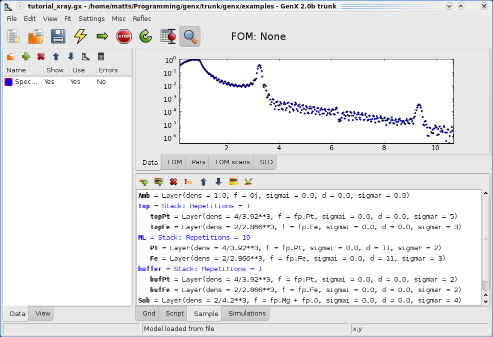
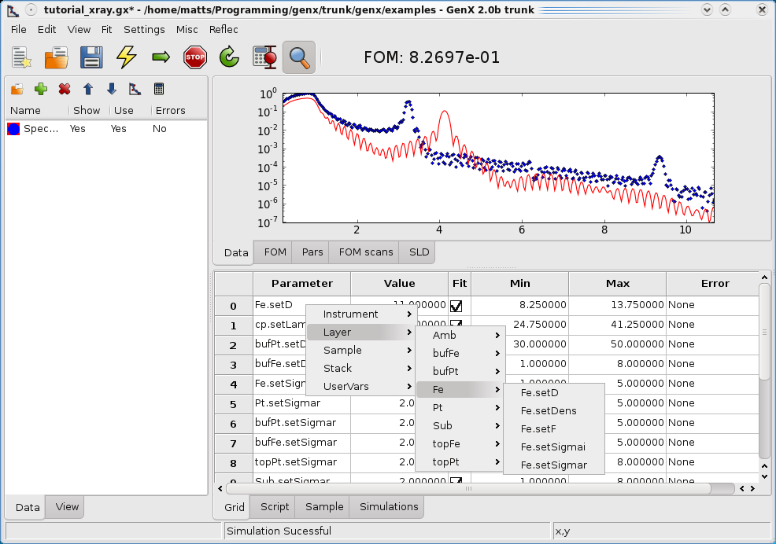
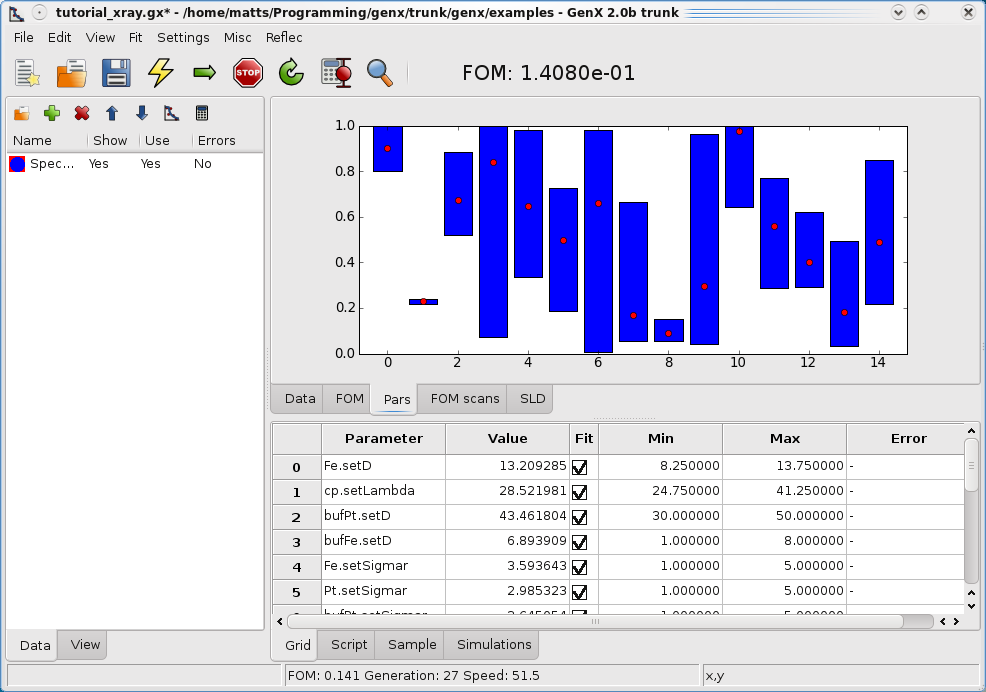
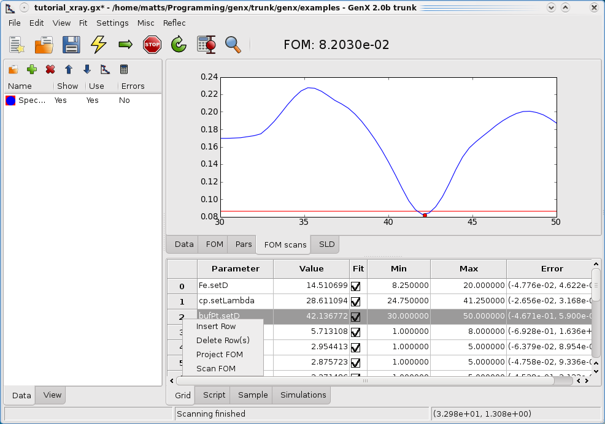
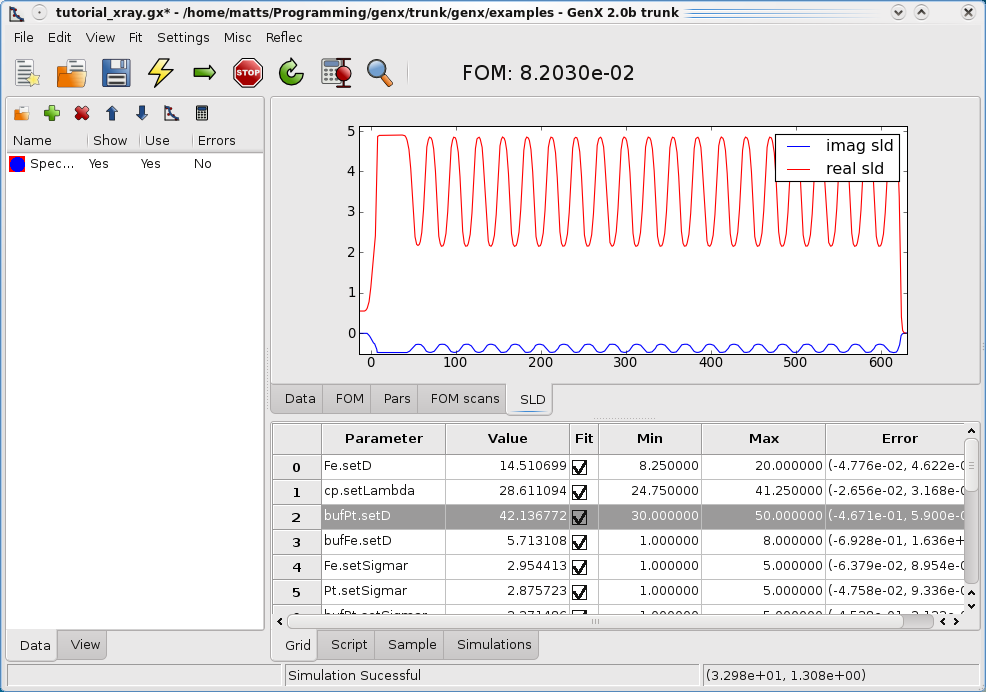

Fitting of x-ray reflectivity data¶
Getting started¶
Start by opening GenX. If necessary, load the Reflectivity plugin by going to the menu . Two new tabs will appear in the lower right section of the window, Sample and Simulations. This is where we will define our sample later.
Loading the data¶
Load the data by clicking on the folder icon the data tab (leftmost splitter window). Remember that a data set has
to be marked in the list below. If you started fresh the data set will have the name Data 0.
Download the file xray-tutorial.dat. In the file dialog choose
the downloaded file. The data should appear in the plot on the right, tab Data. Change the y-scale to logarithmic by right clicking on
the plot and choose y-scale - log. If you would like to inspect the data values click on the tab View in the left part
of the window. In the top of that tab there is a choice drop-down menu, choose your data set.
All the data in the data set will appear in the grid below.
Note that there are 6 columns: x_raw, y_raw, Error_raw, x, y, Error.
The one ending with raw is the loaded data. The other 3 can be changed by transformations given in the
calculations dialog. See the Neutron reflectivity tutorial for more information about transformations of data.
Creating a sample¶
Time to create the sample! Click on the Sample tab. The data we just loaded comes from the a multilayer with the structure: MgO/Fe 4Å/Pt 39Å/[Fe XXÅ/Pt XXÅ]*20
Now this structure should be defined in GenX. Start by adding three stacks, second icon on the toolbar in the Sample tab. Give them the names buffer, ML and top. Then add layers, first button, with parameters shown in the screen shot below. You edit the values by double clicking on the row. If you become insecure about what units or what the parameters mean there is an on board under the menu . For this example choose the spec_nx or interdiff model in the frame that appears (for XRR they are mostly equivalent besides a few changes in parameter names).
When the sample is defined and the data loaded, let’s simulate the structure to see what happens. Press the yellow lightning on the main toolbar, F9 works as well. A red curve representing the simulated data will appear in the data plot.
Coupling parameters¶
In order to make the fitting more effective and reduce the degrees of freedom it can be advantageous to couple parameters. One way is to constrain interdependent parameters another way is to re-express the parameters so that information easily obtained from the diffraction pattern is used, for example the bilayer thickness of a multilayer. Under the tab simulations you find the possibility to express special commands that couple parameters before they are simulated. First create a new parameter by clicking the blue nut on the toolbar. And define the custom parameter (cp) Lambda as shown below.

Note
For advanced users: The optional Sigma value is reserved for fit-parameters that represent systematic errors that apply on the whole dataset like the two theta offset of the instrument setup. If you know the uncertainty on the parameter calibration and enter its standard deviation into sigma the parameter change from the starting value will be used to calculate a penalty factor on the figure of merit (FOM).
Next, choose your data set and press the green plus to add a new command as shown below.

The command sets the thickness of the Pt in the multilayer to the bilayer thickness minus the Fe thickness. Press simulate to update the model.
Fitting the data¶
Defining fit parameters¶
First go to the Grid tab in the lower part of the window. To define a parameter right click on the leftmost cell. A menu will appear where the parameters you can fit appear.
{kind=link}
Note
If you have changed the model recently, new parameters only appear in the menu after the model has been simulated again (F9).
It is important that the cell is not in edit mode (a blinking marker). The cell should only be marked (a bold border around the cell). Alternatively an unmarked cell can be right clicked. Then it’s only necessary to continue to fill all parameter that should be fitted. Note that the custom parameter we defined earlier is found in the list under UserVars. Continue to fill the list so it looks similar to the screenshot below. In total we will fit 14 parameters.

Warning
Do not try to fit the scattering length since the imaginary part of the scattering length will be remove. GenX only fits real valued parameters. Also the parameters Layers and Stacks in the Layer and Stack objects should under no circumstances be fitted as they can only take discrete values.
The Grid¶
The first column defines which parameter should be fitted. The second column, value , sets the start value and also serves as output for the best-so-far value. The Fit column determines whether or not the parameter will be refined, if not checked the parameter will not be varied. The Max and Min columns sets the maximum and minimum allowed values the parameters are allowed to take (if use boundaries is activated from the dialog). If the user, you, sets a Value of one parameter outside max and min the Value cell will become red. The last column error displays the errorbar from the fit, more about that later.
Note
If the menu entry is checked, any change of parameter values will instantly be modeled and shown in the plot. Using the mouse scroll wheel on an active value entry will change the value slightly and can thus be used to manually tweek results.
Starting the fit¶
The fit is started by clicking the green horizontal arrow in the toolbar. When the fit is starting, have a look at the status bar which will give you information about the progress of the fit.
During the fit there are mainly three different tabs that are interesting. Firstly, the data tab that shows the data and model, the most understandable plot. Secondly, the FOM folder this shows the Figure of Merit as a function of the generations (iterations). When this has flattened out there will be little improvement of the fit. Which FOM to choose is very problem dependent, I personally prefer the absolute log FOM for most reflectivity problems, that happen to be the default. It is especially needed for x-ray fitting when the statistics at the critical edgie is far too good and no systematic errors have been included to allow the use of chi2bars (which is optimal for statistically reliable parameter uncertainties). You can change the FOM function if you go to the menu .
The third tab that is updated during a fit is the Pars tab shown below.
This can be a bit difficult to understand but is very good to study the convergence of the population (=sets of parameters tried in one generation). It shows the population spread (blue bars) for each parameter. The x-axis represents the parameter index and the y-axis is the normalized parameter value (the parameter minus the minimum allowed value divided by the max-min span). The little red dot is the current best value. So it is save to assume that there will be NO more improvement when the blue bars are very small.
Note
This is the basis for the fit paramter parameter spread to stop that was introduced in version 3.5.0. With this you can define a value of the parameter with the largest relative spread during the refinement. If the population has a spread that is lower, the fit will be stopped automatically, assuming that convergence has been reached. (Safe values are between 0.1% and 1.0%.)
It is also useful to keep an eye out if a parameter tends to go to a limit, then it might be a good idea to change the boundaries, within physically reasonable values.
Stopping the fit¶
The fit is halted by pressing the stop button, not so difficult. It can take some time before the system responds, depending on how demanding the calculations are. Then a dialog pops up asking whether or not to update the gird values with the fitted ones, see below. (Since version 3.5.0 the change can be undone afterwards.)
If you, for some reason, want to continue the fit later, click on the circular arrow next to the stop button. This will resume the fit from the point where it was stopped. If you, on the other hand, press the straight arrow, which we used to start fitting, the fit will be reinitialized and everything will be started from the beginning.
Note
Remember that the Differential Evolution algorithm has a random component. For this reason not every run from the same starting parameters converges on the same values. It can therefore be helpful for complicated models to restart a fit to get out of a local minimum. (Or tweek some parameters manuallly and start again.)
Analyze the Fit¶
Let’s hope that the fit you got looked good. The FOM should be below 0.1, i.e., 8e-2. The first thing we want to do after we got a good fit is to study the errorbars on the values. Click on the calculate errorbar button on the toolbar, see below.

After a couple of seconds the Error column in the grid should be populated with errors. The values represent the (delta_neg, delta_pos) of the values. The errors are calculated as a 5% increase in the optimal FOM. In order to get as good estimate in a multi-dimensional fit GenX logs all the parameter evaluations and uses these to find the min and max values corresponding to the increase.
Warning
This is not a strictly valid statistical estimation. Most x-ray data does not have valid errorbars and are swamped with systematic error. That is the systematic errors are dominating. Therefore it is usually hard to fit x-ray reflectivity with a Chi² criteria where we actually can calculate valid errorbars. For a more regorous statistical treatment see Error Statistics from bumps library.
If you want to have a closer look at the data that produced the errorbars. Click on the FOM scans tab. Then right click on the parameter number, usually in gray, in the column before the parameter name. (You can also click the P icon in the small toolbar on the left.) Choose project FOM in the pop-up menu. The screen should look like the one below.

As before the red dot represents the best value of that parameter. And the red line shows the errorbar limit. All the blue dots, quite many, shows all the evaluated FOM. Note that this is a projection of all the evaluated FOM down to one parameter axis.
If you, on the other hand, want to have a line scan choose a parameter as above and right click on the label. Choose the Scan FOM option from the pop-up menu (or click the S button). A dialog box will ask for the number of points. Then the parameter will be scanned and the FOM will be evaluated for all points. The result will be seen in the FOM scans tab. For an example see below.
The last little check is to observe the electron density/scattering length density plot. It resides in the SLD tab. This shows you the real and imaginary part of the scattering length. In order to update the simulation button has to be pressed. This is good to check if layers disappear, try to find the bottom Fe seed layer between the MgO substrate and the Pt buffer.
Naturally, all the default plots can be copied to the clipboard as images.
I hope this was enough information to get you up and running with GenX. Of course feedback is always welcome.